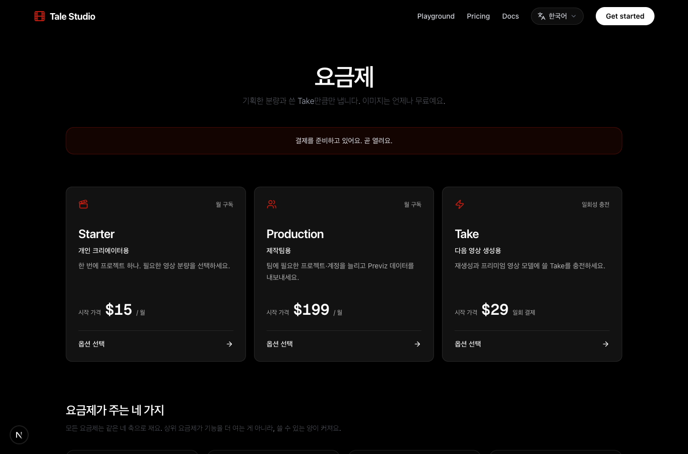
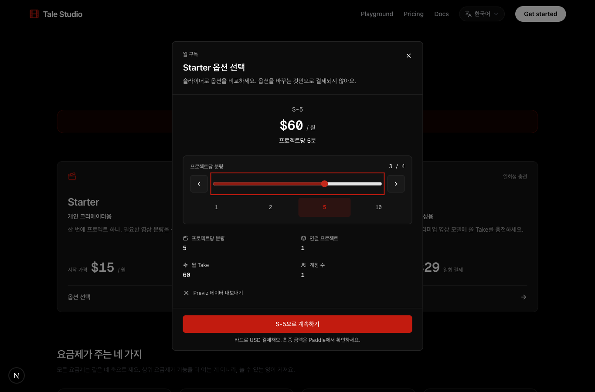

한국 고객도 허용하고, 국내 PG와 직접 계약하지 않은 채 Paddle에서 USD 카드결제를 받는 구성이 목표입니다. 도메인 심사는 이미 접수됐지만 공개 정책·AI 심사자료·신원 확인과 운영 연결은 아직 남아 있습니다.
이전 문서의 “해외 고객만 판매·한국 고객 차단”은 목표를 잘못 이해한 내용이어서 정정했습니다. 한국 고객을 차단하지 않습니다. 결제 통화·결제사업자를 선택하는 것과 적용 세법을 선택하는 것은 다릅니다.
2026년 9월 9일 현황 업데이트 · 운영 URL 재확인 17:00 KST. 상태 표기: ✅ 완료·확인됨 / ◐ 일부 완료·진행 중 / ☐ 미완료·필요 / 👤 본인 확인 필요. 아래는 누적 작업 결과입니다. 이번에는 문서·작업공간·공개 URL을 대조했으며, Paddle·Payoneer 심사 화면을 다시 조회하거나 운영 배포·설정 변경·결제를 실행하지 않았습니다.
한눈에 보는 현재 단계
2026-09-09 오너 확정 · 최신 기록: Sandbox A는 우리 소유이며 당분간 삭제할 예정이 없으므로 기능 테스트에 계속 사용해도 됩니다. Live B는 윤대원 명의의 실제 판매·심사·정산용입니다. 두 계정의 이름이 다르더라도 테스트와 운영의 역할을 분리합니다. A의 테스트 통과를 B의 판매 승인·운영 연결 완료로 표시하지 않고, 키·상품 ID·웹훅 비밀값과 개발·운영 DB를 섞지 않습니다.
최신 요청은 “기록만”이므로 추가 테스트·배포는 중단하고 재개 대기합니다. 중단 전 개발 DB에 별도 테스트 계정·작업공간 1개를 만들었고 기존 사용자 데이터는 수정하지 않았습니다. 로그인 자동화의 응답 해석 검사에서 멈춰 로그인·Sandbox 구매·환불·해지는 미완료입니다. 새 테스트 거래·실제 과금·운영 배포는 실행하지 않았습니다.
승인 전 구매 차단 장치는 원본 로컬 작업공간에 구현했고 담당 에이전트가 관련 테스트 11개 통과를 보고했습니다. 분리 배포용 작업공간으로의 추가 반영·최종 검사·화면 검증·운영 배포는 아직입니다. 아래 22개 파일·58개 테스트는 그 이전 분리 준비 결과입니다.
현재 위치: 결제 기능 구현 + 분리 배포 준비 완료. 실제 운영 배포 전입니다. “테스트 58개 통과”는 코드 검사 결과이며, Paddle 샌드박스에서 구매부터 환불까지 끝냈다는 뜻은 아닙니다.
| 단계 | 현재 상태 | 완료 기준 / 남은 것 |
|---|---|---|
| 1. 상품·화면·연결 준비 | ✅ 완료 | 새 Live 계정 상품·가격 13개, 결제 토큰·비활성 웹훅 준비. 3개 카드 → 팝업 안 슬라이더, 공개 /checkout 로컬 구현 |
| 2. 결제만 분리한 배포 준비 | ✅ 파일 분리·기초 검사 완료 ☐ 실제 운영 배포 | 당시 운영 버전 기준 결제 파일 22개만 분리. 해당 작업공간에서 테스트 58개·전체 타입 검사 통과. 최종 빌드·배포 전 점검과 실제 반영은 남음 |
| 3. 샌드박스 전체 결제 검증 | ☐ 미완료 · 승인 전 가능 | 별도 테스트 환경에서 테스트 카드 → Paddle 알림 → 권한·Take 지급 → 환불·해지까지 확인. 실제 카드·결제대금은 필요 없음 |
| 4. Paddle 판매 승인 | ◐ 도메인 접수됨 ☐ 승인 완료 확인 필요 | 마지막 기록: 도메인 Pending, 계정 검증 Not started. 정책·AI 자료 보완과 본인 확인 필요. 상품의 SaaS Approved와 다름 |
| 5. 운영 연결·판매 개시 준비 | ☐ 미완료 | 새 계정 운영 설정, 승인된 도메인의 기본 URL 저장, 카드 외 결제수단 해제, 웹훅 활성화·수신 확인 |
| 6. Live 실제 카드 검증 | ☐ 미실행 · 판매 승인 후 | 카드 소유자 동의 후 실제 청구·지급·환불 확인. 구독이면 자동갱신 해지도 별도로 확인 |
지금 추천: 3번 무과금 검증과 2번 안전한 공개 페이지 배포 준비를 진행하면서, 4번 정책·심사자료·본인 확인을 병행합니다. 담당별 다음 할 일 · 심사 신청·보완 경로. 단계 번호는 상태를 구분하기 위한 것이며, 샌드박스 검증 완료를 기다려야 심사를 보완할 수 있다는 뜻은 아닙니다. Paddle 테스트·승인 조건
용어 정정 — 승인 전 준비 ≠ 승인 후 실결제: Paddle 판매 승인이 끝나지 않았다면 Live에서 실제 카드 청구부터 테스트할 수 없습니다. 지금의 분리 배포 요청은 공개 페이지·설정 준비와 무과금 샌드박스 검증 단계입니다. 이후 Paddle의 사이트·신원 등 필요한 승인을 확인하고, 마지막에 카드 소유자가 동의한 실제 청구·환불을 검증합니다. Live API 키·상품 등록·SaaS 과세분류 승인만으로 판매 승인이 끝난 것은 아닙니다. 샌드박스와 Live 조건, 판매자 검증 단계
✅ 분리 배포 요청 접수·운영 최신 버전 기준 별도 작업공간에 결제 파일 22개 분리·관련 테스트 58개 통과. ☐ 실제 운영 배포·Live 결제 활성화·실제 과금은 아직 실행하지 않았습니다.
앞선 구현 결과: ✅ Starter·Production·Take 카드 3개 → 클릭한 카드의 팝업 → 팝업 안 좌우 슬라이더로 기존 13개 옵션 선택 UI 구현. ✅ 별도 공개
/checkout구현. 앞서 준비한 새 계정 결제창 토큰·운영 웹훅·서명키와 USD 설정은 유지했습니다. 웹훅은 운영 전환 전까지 비활성으로 기록돼 있습니다. 4번 정책과 다른 담당자의 영상 변경은 수정하지 않았습니다.URL 결정 완료: 기본 결제 도착지는
https://talestudio.art/checkout입니다. 운영 배포·Paddle URL 저장은 아직 미완료입니다. 17:00 KST 운영 재검사에서도 HTTP 307로/login?next=%2Fcheckout에 이동했습니다. 다른 영상 변경을 제외한 결제 전용 분리 배포 요청을 받았고, 배포용 작업공간을 준비했습니다.
1. 현재 상태와 남은 일
| 항목 | 확인한 상태 | 필요한 조치 |
|---|---|---|
| 도메인 | ✅ 접수됨 / ◐ 마지막 화면 확인 시 talestudio.art는 Pending | 현재 심사 상태·추가 요청 확인. 중복 등록 없이 기존 심사 보완 |
| 상품·가격 | ✅ 현재 윤대원 Live 계정에 월 구독 9개·Take 팩 4개 등록 완료. API 재조회로 금액·주기·USD·SaaS·국가별 가격 override 없음 검증 | ☐ 운영 사이트를 새 가격 ID 13개로 연결·배포 |
| 판매자 계정 | ✅ 기준 계정 확인: Talestudio / 한국 / 개인·개인사업자 / Daewon Yoon, Seller ID 419628. 대표자 이름은 이미 일치 | ☐ 운영 키·상품·결제 토큰·웹훅·Payoneer 실명까지 동일 사업 기준으로 연결 |
| 새 Live API 키 | ✅ 오너가 새 계정에서 발급하고 로컬 파일 갱신. 새 키의 상품 조회 성공 | 운영 서버에는 상품·토큰·웹훅과 함께 전환해야 함 |
| 새 결제창 토큰 | ✅ 현재 계정에 생성·재조회·Live 접두사 확인, 로컬 Live 전용 항목에 보관 | ☐ Vercel Production에 누락된 브라우저용 토큰 추가·재배포 |
| 운영 웹훅 준비 | ✅ 운영 주소와 앱이 처리하는 이벤트 11개 등록·검증, 서명키 보관 / ◐ 비활성 | 운영 환경값·배포 확인 후 활성화. 알림 수신·권한 지급 검증은 아직 아님 |
| SaaS 과세분류 | ✅ 현재 계정에서 Approved 확인 / ✅ 새 상품 13개에 saas 적용 검증 | 추가 승인 신청 불필요. AI 제품 판매 심사와는 별개 |
| 공개 정책 | ◐ 다른 담당자 진행 — 4번 섹션 본문은 이번 작업에서 변경하지 않음 | 담당자의 실제 게시·footer 연결 완료 증빙 수령 후 체크 |
| 제품 심사 | AI 인물·캐릭터·영상 생성 서비스 | 실제 기능과 안전장치를 설명하는 자료 준비 |
| 계정 검증 | ☐ 마지막 화면 확인 시 Get Started의 계정 검증은 Not started | 👤 현재 단계 확인 후 윤대원 본인의 신원 확인. 3번의 문서·촬영 가이드 참고 |
| Payoneer | Paddle에 정산 수단으로 저장된 것은 확인 | Payoneer 자체 인증·은행 승인·출금 가능 여부는 별도 확인 |
| 한국 고객 포함 USD 카드결제 | ✅ 앱 코드·USD 가격 / ✅ 자동환전 0개 확인 / ☐ 운영 배포 전 | 확정한 /checkout 운영 반영 후 카드 외 수단 해제 저장·운영 결제창 검증 |
| 가격표 선택 화면 | ✅ 카드 3개와 팝업 내부 옵션 슬라이더 구현. 기존 13개 상품·가격·제공량 유지 | ☐ 운영 반영. 카드·슬라이더 선택만으로 거래를 만들지 않음 |
| 공개 페이지 배포 | ✅ 공개 /checkout 로컬 구현·배포용 파일 분리 / ☐ 운영 배포 | 최종 빌드·안전한 판매 대기 처리 확인 후 반영. 운영에서 로그인 없이 열리는지 검사 |
| 샌드박스 결제 검증 | ☐ 테스트 카드로 전체 구매·환불 흐름 검증 미완료 | 승인 전 별도 테스트 환경에서 검증. 로컬 UI·코드 테스트 통과와 구분 |
| 운영 URL·Live 검증 | ☐ 기본 URL 저장 / ☐ 실제 카드 구매·환불 | 도메인·판매 승인과 새 계정 운영 연결 확인 후 진행. 지금 실제 과금하지 않음 |
상품이 연결되지 않았던 이유
원인은 예전 판매자 계정의 Live API 키였습니다. 오너가 이를 확인했고 현재 계정에는 상품·API 키가 없던 상태였습니다. 오너가 발급한 새 Live 키로 빈 상품 목록을 확인한 뒤, 현재 계정에 상품·가격 13개를 새로 등록했습니다. 등록 후 API 재조회 검증은 13개 모두 통과했습니다. 예전 계정의 상품·키를 변경하거나 삭제하지 않았습니다.
이제 Paddle 쪽 상품은 준비됐지만 운영 사이트 연결까지 완료된 것은 아닙니다. 새 계정의 키·토큰·가격 ID·웹훅으로 운영 설정을 전환해야 합니다. 사이트의 카탈로그 상태 표시는 가격 ID가 설정돼 있는지 확인하는 것으로, 그 ID의 판매자 계정까지 검증하는 것은 아닙니다.
이번에 추가 확인한 운영 연결 문제: Vercel Production에는 브라우저용 결제 토큰이 없고, 서버 API 키·웹훅 서명키·가격 ID 13개도 이번 새 계정 값과 불일치합니다. 환경 모드만 production으로 일치합니다. 비교 과정에서 비밀값은 출력하지 않았으며, 아직 운영 설정을 덮어쓰거나 재배포하지 않았습니다.
✅ pricing 기준 등록 완료 — 13개
| 구분 | 상품·가격 (USD) | 결제 주기·제공 조건 |
|---|---|---|
| Starter 4개 | S-1 $15 · S-2 $30 · S-5 $60 · S-10 $110 | 월 구독. 제공량·계정 수·내보내기 조건은 현재 pricing 카탈로그 기준 |
| Production 5개 | P-10 $199 · P-15 $449 · P-20 $649 · P-25 $999 · P-30 $1,299 | 월 구독. 임의 할인·연간 가격을 추가하지 않음 |
| Take 팩 4개 | Mini $29 / 50 Takes · Standard $109 / 200 Takes · Pro $479 / 1,000 Takes · Studio $2,199 / 5,000 Takes | 일회성 구매, 구매일부터 12개월 유효 |
| Free·Enterprise | Free는 유료 상품 등록 대상 아님. Studio 연간 맞춤 계약은 견적 필요 | 맞춤 계약 금액을 임의로 만들지 않음. 심사용 가격·제공량·계약기간 문서 필요 |
공개 가격표와 정책은 심사에 필요하지만, 결제 구현 전체가 완성돼야 심사를 신청할 수 있는 것은 아닙니다. Paddle 도메인 심사 요건, 설정 순서
2. 세무 목표와 세율
가능한 목표와 불가능한 전제
권장하는 목표는 다음입니다.
한국 소재 개인사업자 윤대원이 국내외 고객에게 AI SaaS를 제공한다. 국내 PG와 직접 계약하지 않고 Paddle을 통해 USD 카드결제를 받는다. Paddle은 구매자 거래의 VAT·판매세를 처리한다. 우리는 한국 소득세 신고와 Paddle에 공급하는 거래의 한국 부가세·영세율 검토를 별도로 한다.
세금은 세 부분으로 나눠야 합니다.
| 구분 | 처리 주체 | 우리에게 의미하는 것 |
|---|---|---|
| Paddle → 국내외 구매자의 VAT·GST·판매세 | Paddle | 구매자 위치·상품 분류·사업자 여부에 따라 계산·신고. 한국 고객의 USD 결제도 포함 |
| 우리 → Paddle 공급 거래의 한국 부가세 | 우리 | 영세율 요건을 충족하는지 별도 판단 |
| 우리 사업에서 발생한 소득에 대한 한국 소득세 | 우리 | 해외 결제·Payoneer 수취만으로 없어지지 않음 |
Paddle은 구매자에게 판매하는 주체인 MoR입니다. 하지만 한국 거주자인 개인사업자의 소득세까지 대신 처리하는 구조는 아닙니다. Paddle의 세금 처리 범위, 소득세법 제3조
한국 부가세: 일반세율 10%, 영세율 요건을 충족하면 0%
우리 서비스는 소프트웨어·호스팅 등 외화획득 용역에 해당하는지 검토할 여지가 있습니다. 다만 다음을 함께 봐야 합니다.
실제 계약 상대방인 Paddle 법인과 공급 내용
공급 장소 및 해당 업종
Paddle에서 Payoneer를 거쳐 받는 대금의 송금 경로
외화 수취·국내 입금 사실을 증명할 서류
달러 결제·해외 결제사·Payoneer 수취만으로 영세율이 확정되지는 않습니다. 반대로 최종 고객에 한국인이 포함된다는 이유만으로 우리 → Paddle 공급의 영세율이 무조건 배제되는 것도 아닙니다. 두 거래를 분리해 실제 계약·용역·공급 장소·외화 수취 요건으로 판단해야 합니다. 영세율은 면세와 다르므로 신고·증빙 관리가 필요합니다. 부가가치세법, 시행령 제33조, 시행규칙 제22조
따라서 Payoneer 경유 증빙으로 요건 충족이 불명확하다면, Paddle에서 한국 사업자 명의 외화계좌로 직접 정산받는 경로와 비교하는 것을 제안합니다. 직접 송금도 자동 승인 조건은 아니며, 계약·업종 요건은 그대로 검토해야 합니다.
한국 개인사업자 소득세
현재 브라우저의 개인사업자 설정을 전제로 한 세율입니다. 매출이 아니라 필요경비·공제 등을 반영한 연간 과세표준에 구간별로 적용합니다.
| 연간 과세표준 | 소득세 | 지방소득세 포함 표준 한계세율 |
|---|---|---|
| 1,400만원 이하 | 6% | 6.6% |
| 1,400만~5,000만원 | 15% | 16.5% |
| 5,000만~8,800만원 | 24% | 26.4% |
| 8,800만~1억5,000만원 | 35% | 38.5% |
| 1억5,000만~3억원 | 38% | 41.8% |
| 3억~5억원 | 40% | 44% |
| 5억~10억원 | 42% | 46.2% |
| 10억원 초과 | 45% | 49.5% |
최고 구간 세율이 전체 소득에 적용되는 것은 아닙니다. 실제 사업자가 법인이라면 이 표 대신 법인세 기준으로 다시 계산해야 합니다. 소득세법 제55조, 지방세법 제92조
국내외 구매자에게 붙는 세금
한국 소비자의 일반 디지털 서비스 구매에는 통상 부가세 10%가 적용됩니다. USD로 결제해도 한국 VAT를 없애는 방법이 아닙니다. 유효한 사업자 세금번호가 있는 B2B 등은 별도 판정입니다. 부가가치세법 제53조의2
대표적인 일반 디지털 상품 세율은 한국·일본·호주 10%, 싱가포르 9%, 영국·프랑스 20%, 독일 19%입니다. 미국은 주·지역·상품 과세 여부에 따라 다릅니다. 유효한 사업자 세금번호가 있는 B2B 거래는 처리 방식이 달라질 수 있습니다. 실제 거래의 최종 세율은 고객 위치·과세분류·사업자 여부를 반영한 Paddle 계산을 확인해야 합니다. Paddle 국가별 세율표
현재 확인한 세금 설정은 Automatic based on location입니다. 예를 들어 세율 20%인 거래에서 $15가 세금 포함이면 세전 금액은 $12.50이고, 세금 별도면 고객 결제액은 $18입니다. pricing의 표시 방식과 맞춰야 합니다. 세금 포함·별도 설정
참고로 Paddle의 공개 기본 수수료 5% + 건당 $0.50은 세금이 아닙니다. Payoneer 수수료·환전 비용은 계정과 출금 방식별로 별도입니다. Paddle 요금, 정산 수수료 안내
3. Paddle·Payoneer에서 직접 확인하거나 추가할 것
Paddle
판매자 계정 통일
✅ Paddle에 저장된 대표자는 이미 Daewon Yoon(윤대원)입니다. 한국·개인/개인사업자 설정과 Seller ID
419628를 기준으로 삼습니다. 이름을 새로 변경한 것은 아닙니다.✅ 예전 계정 키 때문에 상품 목록이 달랐던 원인을 확인했고, 오너가 새 Live 키를 발급·저장했습니다.
✅ 상품·가격 13개, 서버 API 키, 브라우저용 결제 토큰, 웹훅 서명키의 새 계정 준비는 완료했습니다. ☐ 운영 서버 연결은 아직입니다. 기존 고객·구독이 있다면 예전 계정 ID는 새 계정에서 사용할 수 없으므로 먼저 이관 범위를 확인해야 합니다.
👤 Payoneer의 실제 소유자와 출금 계좌 명의도 윤대원 사업과 일치해야 합니다. 이메일이 같다고 실명까지 검증된 것은 아닙니다. 다른 사람 명의를 이름만 바꾸는 방식으로 처리하지 않습니다.
☐ 사이트 정책에는 운영자 윤대원과 사업자등록증상 상호·사업정보를 함께 반영해야 합니다. 브랜드 Talestudio와 법적 판매자 이름은 구별해 표기합니다.
과세분류 승인 — ✅ SaaS 승인 확인, 추가 신청 불필요
현재 윤대원 계정의
Catalog → Taxable Categories → All에서 SaaS = Approved를 확인했습니다. 요청하신 “승인이 필요하면 확인 요청” 조건에 해당하지 않아 중복 요청을 보내지 않았습니다.이전 API에서 보였던 13개 상품의
Standard Digital Goods는 예전 계정의 설정입니다. 새 계정 상품 13개에는 SaaS를 적용했고 재조회로 검증했습니다.분류 승인은 AI 제품 자체의 판매 승인과 다릅니다. 승인돼 있어도 실제 상품에 분류를 지정해야 합니다. Paddle 과세분류 안내
한국 고객 포함 · USD 카드결제
✅ 앱 코드: 거래 생성 시 USD를 명시하고, 구매 버튼의 결제창을
card만 표시하도록 수정했습니다. 한국과 미국 요청 모두 허용되는 테스트를 통과했습니다. 아직 운영 배포 전입니다.✅
Business Account → Currencies실제 화면에서 Balance currency = USD, 0 Active conversions를 확인했습니다. 자동환전은 이미 꺼져 있어 변경하지 않았습니다. USD 잔액 통화와 고객 결제 통화는 별개이므로 둘을 구분해 확인했습니다.✅ 새 가격 13개는 기본 통화 USD이며 국가별 가격 override가 없음을 API로 검증했습니다. 계정 자동환전 설정은 별도입니다. 적용 우선순위는 국가별 가격 → 자동환전 → 기본 통화입니다.
☐
Checkout → Checkout settings: 실제 저장 상태에는 PayPal·Apple Pay·Bancontact가 켜져 있습니다. 세 항목을 끄고 저장을 시도했지만 기본 결제 URL 필수 오류로 저장 실패했습니다. 미저장 초안은 새로고침해 되돌렸으며 해제 완료로 표시하지 않습니다. 확정한 /checkout 운영 반영·URL 저장 후 다시 끄고 저장·재조회해야 합니다. 나머지 표시된 선택 결제수단은 꺼져 있었습니다.한국 로컬카드 결제수단은 한국 주소·KRW 거래 조건으로 표시되며, 일반 국제 카드결제와 다릅니다. 한국 고객도 해외결제가 가능한 카드로 USD 결제를 시도할 수 있지만, 국내전용 카드·발급사 차단·해외결제 수수료는 별도입니다.
수동 인보이스에는 은행송금이 항상 활성화됩니다. “카드만”을 목표로 한다면 맞춤 계약 인보이스 판매는 별도 검토해야 합니다.
AI 기능 사전 설명
사람 얼굴 생성은 실사뿐 아니라 일러스트·애니메이션도 추가 심사 대상입니다.
실제 생성 기능, 사용 모델, 인물 동의, 금지 콘텐츠 차단, 신고·삭제 절차를 설명하고 필요한 자료를 확인해야 합니다.
얼굴 합성·딥페이크·음성 사칭 등 금지 기능이 실제 제공된다면, 문서 보완만으로 해결되지 않을 수 있습니다. Paddle AUP
계약·정산 자료 확보
우리와 계약하는 Paddle 법인명·국가
적용되는 판매자 계약
정산명세서 및
Reverse Invoice견본매출·구매자 세금·수수료·환불·실지급액을 대조할 자료
Paddle은 정산 시 Reverse Invoice를 발행합니다. 다만 이 문서만으로 한국 영세율 요건이 모두 충족되는지는 별도입니다. 정산 인보이스 안내
계정 검증: 윤대원이 직접 해야 하는 것
👤 미완료. 대시보드의 Get Started → Verify your account 또는 Paddle이 보낸 검증 이메일을 엽니다. 도메인 승인 후 다음 단계가 열릴 수 있습니다. 공식 순서는 도메인 → 사업자 확인 → 신원 확인이며, 개인·개인사업자는 별도 법인 사업자 확인 단계가 면제되지만 신원 확인은 필요합니다. 계정 검증 순서
본인정보 확인: 대표자 영문명 Daewon Yoon, 생년월일, 거주 주소를 실제 신분증·주소증빙과 맞춥니다. 사업자등록증과 등록한 사업정보도 준비합니다. 표기 차이가 있으면 실제 제출 화면 또는 지원팀 안내를 따릅니다.
신분증 촬영: 화면에서 허용하는 유효한 여권·주민등록증·운전면허증 중 하나를 사용합니다. 한국 지원 문서에는 여권 펼친 면·주민등록증 앞면·운전면허증 앞면 등이 있지만, 실제 Paddle 제출 화면의 허용 목록이 최종 기준입니다.
얼굴 확인: 요청되는 셀피·짧은 생체 확인 영상을 본인이 촬영합니다. 밝은 곳에서 반사·가림을 피하고 화면 지시에 따릅니다. 에이전트가 대신 수행할 수 없습니다.
주소증빙: 요청되면 본인 이름·거주 주소·발급일이 있는 은행 명세서, 공과금 또는 정부 발행 문서를 준비합니다. 최근 3개월 문서가 일반적인 기준이지만 제출 화면의 문서 종류·기간이 우선입니다.
제출 결과 확인: 즉시 판정될 수 있고 수동 검토는 통상 1~3영업일 안내입니다. 추가 요청 메일이 오면 같은 심사 건에 보완합니다. 이 일정은 승인 보장이 아닙니다.
신분증·생년월일·주소증빙 원본은 채팅이나 이 HTML에 넣지 말고 Paddle 공식 검증 화면에만 제출하세요. Paddle 신원 확인, 국가별 지원 문서, 주소증빙 요건
기본 결제 URL 확정: 공개 /checkout, 상품 선택은 /pricing
✅ 실제 공개 접근 확인: /pricing은 로그인 없이 열립니다(HTTP 200). /account는 로그인으로 이동합니다(HTTP 307). 로그인 후 구매하는 서비스라는 사실 자체가 문제는 아닙니다. 심사팀이 볼 제품 설명·가격·정책은 공개해야 하고, 로그인 제품에는 테스트 계정을 요구할 수 있습니다.
✅ 오너 선택·로컬 구현 완료 / ☐ 운영 연결 미완료. 별도 공개 /checkout을 기본 결제 도착지로 사용합니다. Paddle은 ?_ptxn=txn_…을 붙이고, 그 페이지의 Paddle.js가 기존 거래를 엽니다. 결제수단 변경 이메일 등에서도 이 링크를 사용할 수 있습니다. 기본 결제 링크 공식 동작
| 주소 | 역할 | 로그인·현재 상태 |
|---|---|---|
https://talestudio.art/pricing | 공개 상품 설명·3개 카드·옵션 선택 팝업. 확정 버튼에서 기존 구매 흐름으로 연결 | 공개. 새 UI는 로컬 구현 완료, 운영 반영 전 |
https://talestudio.art/checkout | Paddle의 기본 결제 링크 도착지. 거래 링크로 들어올 때 기존 거래 결제창 초기화 | 로컬은 로그인 없이 HTTP 200. 운영은 아직 HTTP 307 → 로그인: 배포 필요 |
https://talestudio.art/account | 구독·결제 결과·잔액 확인 | 로그인 유지. 기본 결제 도착지로 쓰지 않음 |
https://talestudio.art/api/billing/paddle/webhook | 결제·구독·환불 알림 수신. 고객이 여는 페이지가 아님 | Paddle에 등록 완료·비활성. 새 운영 서명키 반영 후 활성화 필요 |
일반 구매: 공개 가격표 → Starter·Production·Take 중 카드 클릭 → 해당 팝업 안 슬라이더로 가격·제공량 비교 → 계속하기 → 필요한 경우 로그인 후 같은 옵션으로 복귀 → 다시 확정 → 선택 팝업 닫기 → Paddle 결제창. 기존 구독자의 요금제 변경은 기존 별도 변경 확인창으로 넘어가며, 옵션 선택만으로 저장된 카드가 청구되지 않습니다.
결제 링크 방문: /checkout?_ptxn=… → 기존 거래의 Paddle 창. 링크 없이 /checkout만 열면 새 주문을 만들지 않고 가격표로 안내합니다. 창을 닫거나 로딩에 실패하면 같은 링크 재시도·가격표 복귀를 제공합니다. 결제창 완료를 Take 지급 완료로 표시하지 않고 계정 확인을 안내합니다. 검색 결과에는 노출하지 않도록 설정했습니다.
남은 URL 적용 순서: 구매가 대기 상태인 공개 페이지를 분리 배포 → 로그인 없이 운영 /checkout이 열리는지 확인 → 도메인 승인 확인 → 새 계정 운영 설정과 함께 Checkout → Checkout settings → Default payment link에 https://talestudio.art/checkout 저장 → PayPal·Apple Pay·Bancontact 해제 저장·재조회 → 판매 승인·운영 준비 완료 후 실제 링크·결제수단 변경 흐름 검증. 공개 페이지 배포와 Live 판매 개시는 별개입니다. Live 기본 URL은 승인된 도메인이어야 합니다. 현재 운영은 아직 로그인으로 이동하며 Paddle에도 이 주소를 저장하지 않았습니다. URL이 없으면 다른 Checkout 설정 변경도 저장할 수 없다는 기존 오류는 아직 해소되지 않았습니다. 운영 URL 조건
구현한 화면 — 로컬 검수용
카드 위에는 옵션 슬라이더를 넣지 않았습니다. 카드를 누르면 그 분류의 팝업이 열리고, 팝업 안에서 좌우 슬라이더·화살표·분량 버튼으로 선택합니다. 아래는 실제 개발 화면이며 운영 배포 화면이 아닙니다.


추가 화면: Take 팩 팝업 · 모바일 팝업 · 결제 링크가 없을 때의 공개 /checkout
{kind=link}
{kind=link}
{kind=link}
새 계정 연결에 필요한 키·설정
✅ 새 Live API 키는 오너가 발급·저장했습니다. 발급 경로는 Developer Tools → Authentication → API keys → New API key입니다. 키는 한 번만 보이므로 비밀 저장소에 보관하고 채팅·HTML·공개 저장소에는 넣지 않습니다.
상품 등록용: Products·Prices의 Write 권한이 필요합니다. Write에는 Read가 포함됩니다. 별도 임시 키로 분리할 수 있습니다.
현재 앱 운영용: 코드가 사용하는 Customers Write, Transactions Write, Subscriptions Write, Customer portal sessions Write 권한을 확인합니다. 자동 관리·조회 도구에 다른 권한이 필요하면 해당 작업에만 추가합니다. 무조건 모든 권한을 부여할 필요는 없습니다.
로컬 보관과 운영 적용 구분: 로컬
PADDLE_LIVE_API_KEY는 Live 작업용 보관 항목입니다. 로컬·개발용PADDLE_API_KEY와 sandbox 설정은 그대로 유지합니다. 실제 운영에서는 새 키를 Vercel Production의PADDLE_API_KEY에 적용해야 합니다.✅ 별도 브라우저용 토큰 준비 완료: 같은 Live 계정에
Tale Studio production checkout토큰을 생성·재조회하고NEXT_PUBLIC_PADDLE_LIVE_CLIENT_TOKEN에 보관했습니다. 운영에서는 이 값을 Production의NEXT_PUBLIC_PADDLE_CLIENT_TOKEN에 적용해야 합니다. 현재 Production에는 이 항목이 없습니다. 서버 API 키를 이 칸에 넣으면 안 됩니다.상품 연결: 현재 계정에서 생성한 가격 ID 13개를 Production의
NEXT_PUBLIC_PADDLE_PRICE_…13개에 반영하고 다시 배포해야 합니다. 로컬 sandbox 가격 ID를 Live 값으로 덮어쓰지 않습니다.✅ 웹훅 등록·서명키 보관 완료 / ◐ 비활성: 같은 계정의
Developer Tools → Notifications에https://talestudio.art/api/billing/paddle/webhook과 앱이 처리하는 이벤트 11개를 등록·재조회했습니다.PADDLE_LIVE_WEBHOOK_SECRET에 보관했으며 실제 운영에서는PADDLE_WEBHOOK_SECRET에 적용합니다. 운영 서버가 아직 새 키를 사용하지 않아 active=false, 실제 플랫폼 이벤트용으로 대기시켰습니다. 테스트 이벤트를 운영 DB에 보내거나 Take를 지급하지 않았습니다. 운영 배포 확인 후 활성화·수신 검증이 남습니다.
등록한 11개 이벤트: transaction.completed, transaction.payment_failed, subscription.activated, subscription.updated, subscription.past_due, subscription.canceled, subscription.paused, subscription.resumed, subscription.trialing, adjustment.created, adjustment.updated. 알림 등록, 알림 활성 상태 변경
☐ API 키·클라이언트 토큰·가격 ID·웹훅을 함께 전환하고 실제 운영 응답으로 확인하는 작업은 아직 남아 있습니다. 키 발급·보관, 권한 원칙, 고객 포털 권한
분리 배포용 파일·기초 검사 완료 / 실제 배포 미완료: 앞선 Production 비교에서 17개 설정 중 API 키·서명키·가격 ID 13개(총 15개) 교체, 클라이언트 토큰 1개 추가가 필요했고 환경 모드는 production으로 일치했습니다. 로컬 sandbox 키·가격은 그대로 유지했습니다. 개발 브랜치와 작업폴더에는 다른 담당자의 Director 영상 변경도 섞여 있어 통째로 운영 배포하지 않습니다. 준비 당시 운영 버전 기준 별도 작업공간에 결제 파일 22개만 분리했고 관련 테스트 58개·전체 타입 검사를 통과했습니다. 최종 빌드·배포 전 점검은 남아 있습니다. Vercel 설정·배포는 아직 변경하지 않았으며, 공개 페이지 준비와 승인 후 실제 청구를 별도 단계로 다룹니다.
Payoneer
Paddle에 이메일이 저장돼 있는 것과 Payoneer에서 정상 수취·출금할 수 있는 상태는 구분해야 합니다.
프로필 → Settings → Verification Center: 신원·주소·사업정보 관련 미제출 요청 확인출금 은행계좌 승인 여부와 계좌 명의 확인
Paddle 정산 수취 가능 상태 및 적용 수수료 확인
한국 계좌 출금 시 실제 송금인, 송금 국가, 통화, 국내 이체인지 해외 송금인지 확인
Paddle 정산부터 국내 입금까지 연결되는 거래명세·송금확인 자료 발급 가능 여부 확인
특히 아래 질문이 중요합니다.
Paddle 대금을 한국 사업자 계좌로 인출할 때, 원 지급자와 외화 수취 경로를 증명할 수 있는 서류는 무엇이며 국내 은행에서 외화입금증명서를 받을 수 있나요?
한국 세무사·관할 기관
Paddle이나 Payoneer에는 거래 사실과 서류를 확인하고, 한국 세법 적용은 그 자료를 가지고 다음을 판단받아야 합니다.
우리 업종·Paddle 계약·수취 경로에 영세율 적용이 가능한가?
어떤 증빙과 신고서가 필요한가?
매출 인식, Paddle 수수료, 환불, 환율 차이를 어떻게 장부에 반영하는가?
실제 사업자등록 업종·과세유형이 맞는가?
Paddle 재판매 구조에서 통신판매업 신고 대상인지, 면제 사유가 있는가?
MoR·해외 결제·USD 수취라는 이유만으로 통신판매업 신고가 자동 면제되지는 않습니다. 한국 고객도 받는 실제 구조를 알리고 판단받아야 합니다. 전자상거래법 제12조
세무사에게 전달할 질문: 한국 개인사업자 윤대원이 국내외 고객에게 AI SaaS를 제공합니다. 고객은 Paddle에서 USD로 결제하고 Paddle은 재판매자이며 Payoneer로 정산합니다. Paddle 계약 법인·계약서·Reverse Invoice, 실제 용역/권리 내용, 한국 고객 거래 내역, Paddle → Payoneer → 국내 은행 입금·환전 증빙을 기준으로 우리의 공급받는 자, 부가세 공급 장소·영세율 적용 조문·신고 금액·첨부 증빙을 판정해 주세요.
추후 해외 잔액이 커지면 해외금융계좌 신고도 검토해야 합니다. 신고 대상 계좌에 해당하고 전체 해당 계좌의 합계가 어느 월말에든 5억원을 초과하면 다음 해 6월 신고 대상이 될 수 있습니다. Payoneer 계정이 있다는 사실만으로 해당 여부를 단정할 수는 없습니다. 국세청 안내
4. 우리 사이트에 필요한 정책
☐ 아래 정책의 실제 공개·footer 연결은 아직 미완료입니다. 이 HTML은 준비 현황과 작성 가이드이며, 고객에게 공개되는 정책 자체를 배포한 것이 아닙니다.
| 정책 | 포함해야 할 내용 |
|---|---|
| 이용약관 | 실제 운영 사업자, 서비스 제공 범위, Paddle의 결제·판매 역할, 계정 이용 조건, 구독 갱신·해지, 금지행위 |
| 환불·취소정책 | 신청 경로, 구독 해지 적용 시점, 미사용·사용한 Take 처리, 생성 실패·중복 결제·서비스 장애 처리, 법정 소비자 권리 |
| 개인정보 처리방침 | 계정·프롬프트·이미지·생성물·로그의 처리 목적, 보유·삭제 기간, 위탁·제공 관계, 권리 행사 및 연락처 |
| 국외이전 안내 | 실제 AI·호스팅·DB 등 업체와 국가, 이전 정보, 목적·기간, 적법한 이전 근거 |
| AI 이용·콘텐츠 정책 | 실존인물 동의, 저작권·초상권, 사칭·성적 콘텐츠 등 금지, 신고·삭제·계정 제한, 상업적 이용 범위 |
| Take·가격 설명 | 차감 기준, 월 제공량 소멸, 팩 12개월 유효기간, 사용 순서, 양도·현금화 가능 여부, 세금 포함 방식 |
OAuth를 쓰면 계정정보를 보관하지 않아도 되나?
아닙니다. 외부 계정의 비밀번호를 받지 않는 것과 계정정보를 저장하지 않는 것은 다릅니다. OAuth로 전환해도 사용자 식별자·이메일·세션을 받아 우리 프로젝트의 인증 시스템과 서비스 데이터에 연결하면 개인정보를 처리하는 것입니다.
✅ 현재 코드 확인: 로그인 화면은 이메일·비밀번호 방식이며 Google OAuth 버튼은 제거돼 있고 인증 콜백만 남아 있습니다. 따라서 지금 “OAuth 전용이며 비밀번호를 수집하지 않는다”라고 게시하면 구현과 맞지 않습니다. OAuth 전환 자체는 이번 확인에서 구현하지 않았습니다.
| 항목 | 현재 확인한 처리 | 방침 작성 시 구분 |
|---|---|---|
| 회원 ID·이메일·프로필 | Supabase Auth의 회원·연결 계정 정보, 사용자 metadata. 앱이 이메일·이름·프로필 이미지 정보를 읽음 | 별도 profiles 테이블이 없어도 회원정보가 없는 것은 아님. 실제 OAuth 제공 항목·scope는 도입 시 재확인 |
| 작업공간·프로젝트 | 회원 ID를 소유자로 저장하고, 이름 또는 이메일을 작업공간 이름으로 복사 | 계정정보와 프로젝트·생성물이 연결됨. 불필요한 이메일 복사는 줄일 수 있지만 현재는 존재 |
| 로그인 유지 | Supabase 세션을 쿠키로 저장·갱신. 접근·갱신 토큰과 사용자 정보 처리 | 쿠키 목적·보유/만료·삭제 방법 설명. 공급자 토큰도 절대 저장하지 않는다고 단정하지 않음 |
| 결제 정보 | 로그인 이메일을 Paddle 고객 생성에 전달하고 우리 DB에 고객번호·작업공간 연결과 웹훅 원본 저장 | 카드번호 직접 보관 여부와 결제 연결정보 보유는 별개. 원본 이벤트의 개인정보·보유기간도 점검 필요 |
| 문의 | 문의 내용과 사용자 이메일을 저장하고 설정에 따라 이메일 서비스로 전달 | 문의 처리 목적·보유기간·위탁 관계 포함 |
Supabase 공식 문서상 회원은 auth.users, 연결된 로그인 제공자 정보는 auth.identities, metadata는 raw_user_meta_data에 보관됩니다. 우리 코드가 이 계정을 사용하므로 외부 인증업체에 맡겼다고 “우리는 계정정보를 보유하지 않는다”고 설명할 수 없습니다. 회원정보 저장, 회원 속성, 연결된 로그인 정보
아직 미확인: 실제 사용할 OAuth 제공자, 동의한 scope, 제공받는 세부 프로필, 공급자 토큰 반환·보관 여부, 운영 보유기간·삭제 절차. Google 로그인 공식 기본 요구에는 OpenID·이메일·프로필이 포함됩니다. 이번 확인에서는 개인정보 행이나 실제 토큰을 조회하지 않았습니다. Google OAuth 설정
OAuth 도입 후 실제 동작을 검증해 사용할 문장 방향: “소셜 로그인 제공자의 비밀번호는 수집하지 않습니다. 로그인 및 회원 관리를 위해 제공받는 계정 식별정보·이메일·프로필정보와 로그인 유지정보를 처리합니다.” 실제 항목·목적·보유기간·위탁/국외이전·삭제 및 권리 행사 방법을 확정해야 하며, 현재 게시용 최종 문구는 아닙니다.
개인정보 최소 수집은 권장하지만, 이미 처리하는 정보를 방침에서 빼는 방식으로 해결해서는 안 됩니다. 개인정보처리방침은 OAuth 여부가 아니라 실제 처리 기준으로 작성·공개해야 합니다. 개인정보보호법 제30조
세 가지를 특히 주의해야 합니다.
Take 팩 자체는 Paddle이 공식 지원하는 모델입니다. 내부 AI 사용량 크레딧이라는 실제 구조를 설명하면 됩니다. 현금화 불가 정책과 법정 환불권은 별개입니다. AI 크레딧 지원
“사용하면 무조건 환불 불가”로 쓰면 안 됩니다. Paddle 정책도 구매자 국가의 강행 소비자 권리를 우선합니다. Paddle 환불정책
개인정보 국외이전은 실제 공급자와 계약을 확인해 작성해야 합니다. 모든 경우에 별도 동의가 필요한 것은 아니지만, 단순히 “해외 서비스 이용”이라고 적는 것으로 충분하지도 않습니다. 개인정보보호법 제28조의8
현재 FAQ의 “상업적 이용 전 문의”와 홈페이지의 “외부 AI 학습에 사용하지 않는다”는 약속도 실제 모델 계약·데이터 처리와 일치시켜야 합니다. AI 기반 서비스 사전 고지와 생성 결과물 표시 방식 역시 출시 전 검토 대상입니다. 인공지능기본법 제31조
또한 pricing에 Studio 연간 맞춤 계약이 있으므로, 심사팀에 제공할 Enterprise 가격·제공량·계약기간 문서를 준비해야 합니다. 단순히 가격이 높다는 이유가 아니라 맞춤 요금제가 공개돼 있기 때문입니다. 도메인 심사 요건
5. 실제 심사 진행 경로
추천하는 다음 할 일 — 지금 할 것과 승인 후 할 것
재개 시 무과금 결제 검증과 공개 페이지 배포를 준비하고, 심사 보완은 병행하는 것을 권장합니다. 최신 오너 요청에 따라 현재는 기록만 남기고 추가 실행은 대기합니다. 이번 문서 업데이트에서 배포까지 실행한 것은 아닙니다.
개발: 샌드박스에서 구매부터 환불까지 검증 — 지금 가능, 미완료
개발·미리보기 사이트에 Paddle sandbox 키·토큰·가격·알림 수신 주소와 개발 DB를 맞춥니다. 먼저 기존 sandbox 설정이 실제로 연결되는지 확인하고, 테스트 카드로 월 구독 1종과 Take 팩 1종을 구매해 결제 → 알림 수신 → 권한·Take 지급 → 환불 처리를 검사합니다. 결제 거절·중복 알림·구독 해지·갱신도 테스트 범위에 넣습니다. 운영 DB에 가짜 결제 알림을 보내지 않습니다.이 단계는 실제 카드나 결제대금 없이 가능합니다. 다만 AI 영상을 실제 생성하면 결제 테스트와 별개로 모델 이용료가 생길 수 있으므로, 우선 유료 생성 없이 결제·지급·차감 처리를 검증합니다. 완료 체크 기준은 테스트 거래·알림·개발 잔액·환불 결과가 서로 맞는 증거입니다. 샌드박스 공식 안내
개발: 결제 화면만 안전하게 공개 배포 — 파일 분리 완료, 배포 미완료
영상 변경이 빠진 별도 배포용 작업공간에 이번 구매 차단 변경을 추가로 반영하고 최종 빌드·필요한 회귀 검사·배포 전 검토를 마칩니다. 승인 전 공개 배포를 하려면 가격·상품 설명은 보이되 아직 구매는 실행되지 않는 상태를 보장해야 합니다. 가격 ID 설정과 구매 허용은 구분하며, 실제 판매 승인 완료는 별도로 확인합니다.원본 로컬 구현 완료 · 배포 및 화면 검증 미완료: 구매 버튼에 “결제를 준비하고 있어요”를 표시하고 서버의 신규 구매·즉시 청구되는 변경 요청을 막는 판매 시작 제어를 추가했습니다. 닫힌 Live에서는 기존 거래 링크도 결제창을 초기화하지 않습니다. 담당 에이전트의 관련 테스트 11개 통과 보고가 있으며, 이 기록 업데이트에서는 재실행하지 않았습니다. 샌드박스 검증·해지·환불·알림 수신을 막지 않습니다. 재개 후 분리 작업공간 최종 검사를 마치고, 배포한 /pricing·/checkout이 로그인 없이 열리며 일반 방문만으로 주문·청구가 생기지 않는지 확인해야 합니다.
오너·정책 담당자: 심사 보완과 신원 확인 — 개발과 병행
4번 담당자에게 실제 게시된 약관·환불·개인정보·판매자 정보 URL과 footer 연결 결과를 받습니다. AI 서비스의 실제 기능·안전장치·신고 절차·데모·테스트 계정, Studio 연간 맞춤 요금의 가격·제공량·계약기간 자료를 모읍니다. 정책 초안만 있고 공개 페이지가 없으면 완료가 아닙니다.오너는 Paddle의 기존 Pending 심사와 추가 요청 메일을 확인하고, 신원 확인 단계가 열리면 윤대원 본인이 제출합니다. Payoneer도 명의·인증·출금 가능 여부를 확인합니다. 한국 세무 판단을 위해 Paddle 계약 상대방과 Payoneer 수취·국내 입금 증빙을 모아 세무 담당자에게 확인받는 일은 별도 병행 과제입니다. 신분증 원본을 이 문서나 채팅에 올릴 필요는 없습니다.
개발·오너: 승인 확인 후 Live 연결과 실제 카드 검증 — 지금은 대기
도메인과 필요한 판매자 검증의 승인 완료를 확인한 뒤 새 계정 운영 값 15개 교체·토큰 1개 추가, 재배포, 기본 /checkout URL 저장, 카드 외 수단 해제, 새 웹훅 활성화·서명 검증을 한 묶음으로 점검합니다. 구매 허용은 이 준비가 끝난 뒤에 합니다.마지막으로 카드 소유자가 상품·최종 청구액에 동의한 실제 구매를 진행하고 지급·환불 결과를 확인합니다. 구독은 환불과 별개로 자동갱신 해지도 확인해야 합니다. 환불 처리·수수료·환율 차이 때문에 비용이 반드시 0원이 된다고 약속하지 않습니다. 현재는 카드 입력도, 테스트 구매 금액 결정도 필요하지 않습니다. Live 전환 점검, 판매자 계약·환불 비용 조건
전체 완료·미완료 체크리스트
| 상태 | 항목 | 이번 결과 / 다음 조치 |
|---|---|---|
| ✅ 완료 | 목표 정정 | 한국 고객 허용. 국내 PG 직접 계약 없이 Paddle USD 카드결제. 한국 고객 차단 제안 삭제 |
| ✅ 확인 | 대표자 기준 | Paddle의 Daewon Yoon·한국 개인사업자·Seller ID 419628 확인. 이미 일치해 이름 변경 불필요 |
| ✅ 완료 | 상품 불일치 원인·새 키 | 예전 계정 Live 키였음을 오너 확인. 오너가 새 키 발급·저장, 새 키 조회 성공 |
| ✅ 완료 | pricing 상품·가격 등록 | 현재 계정에 월 구독 9개·Take 팩 4개 생성. 금액·주기·USD·국가별 가격 override 없음 검증 |
| ✅ 완료 | SaaS 과세분류 | 기존 Approved 확인 후 새 상품 13개에 적용·재조회 검증. 추가 승인 요청은 보내지 않음(불필요) |
| ✅ 준비 완료 | 새 계정 결제창 토큰 | 생성·Live 확인·로컬 보관 완료. Production 적용은 별도 미완료 |
| ✅ 등록 완료 / ◐ 비활성 | 새 계정 운영 웹훅 | 운영 주소·이벤트 11개·서명키 준비 완료. 새 서버 설정 배포 뒤 활성화·수신 검증 필요 |
| ✅ 확인 | 계정 자동환전·잔액 통화 | 0 Active conversions / USD 확인. 원래 꺼져 있어 추가 변경 불필요 |
| ◐ 일부 완료 | 카드·USD | 앱 코드·테스트 완료. PayPal·Apple Pay·Bancontact 해제는 기본 URL 필수 오류로 저장 실패. 확정한 /checkout 배포·URL 저장 후 재저장·실제 결제창 검증 필요 |
| ◐ 접수됨 / 승인 미확인 | 도메인 | 마지막 기록은 talestudio.art Pending. 최신 화면·추가 요청 확인 필요. 도메인 구매/등록과 Paddle 승인 완료는 다름 |
| ◐ 다른 담당자 진행 | 공개 정책·판매자 표시 — 4번 | 이번 작업에서 4번 본문은 수정하지 않음. 실제 게시·footer 연결·검증 결과를 받은 뒤 완료 체크. OAuth 관련 검토도 담당 범위 |
| ☐ 필요 | AI·맞춤 요금제 자료 | 인물 생성 등 실제 기능·안전장치·신고 처리·데모, 테스트 계정, Studio 연간 견적·제공량·계약기간 |
| 👤 본인 필요 | Paddle 신원 확인 | 윤대원의 신분증·요청 시 얼굴/주소증빙. 3번 가이드 참고. 제출·승인 미완료 |
| 👤 확인 필요 | Payoneer 실명·인증·출금 | Paddle 정산 수단 저장은 확인. Payoneer 자체 인증·계좌 명의·출금 승인·증빙은 미확인 |
| ✅ 파일 분리·기초 검사 / ☐ 최종 점검·배포 | 결제 전용 배포 준비 | 22개 파일 분리, 별도 작업공간에서 관련 테스트 58개·전체 타입 검사 통과. 최종 빌드·배포 전 검토·운영 반영 미완료 |
| ✅ 원본 로컬 구현 / ☐ 배포용 반영·운영 검증 | 승인 전 판매 대기 처리 | 구매 준비 안내·새 구매·즉시 청구 변경·기존 결제 링크 초기화 차단 구현. 관련 테스트 11개 통과 보고. 샌드박스는 허용하며 판매 승인 여부를 자동 판정하는 장치는 아님. 분리 배포용 작업공간으로 옮기고 최종 검사·배포 필요 |
| ✅ 값 준비 / ☐ 운영 반영 | 운영 연결 통일 | 앞선 Production 비교에서 토큰 누락·15개 값 불일치 확인. Vercel 설정 변경·배포는 미실행 |
| ✅ 로컬 구현 / ☐ 운영 반영 | 가격표 팝업 UI | 카드는 Starter·Production·Take 3개. 팝업 안 좌우 슬라이더·13개 기존 옵션·선택 복귀·결제창 분리. 운영 배포 필요 |
| ✅ 확정·로컬 구현 / ☐ 운영 연결 | 기본 결제 URL | https://talestudio.art/checkout 확정. 공개 경로·기존 거래 초기화·링크 없음/실패/닫힘 복구 구현. 운영은 아직 로그인 이동: 배포·Paddle URL 저장·실제 링크 검증 필요 |
| ☐ 필요 | 한국 세무·법적 의무 | 한국 고객 VAT, 우리 → Paddle 영세율·외화 수취 증빙·한국 소득세, 통신판매업·개인정보·소비자 권리 검토 |
| ☐ 미완료 · 승인 전 가능 | 샌드박스 전체 결제 검증 | 테스트 카드 → 결제 → 웹훅 → 개발 DB 권한·Take 지급 → 환불·구독 해지/갱신. 코드 테스트 58개 통과와 별개이며 아직 전체 흐름 완료 증거 없음 |
| ☐ 미실행 · 판매 승인 후 | Live 실제 카드 검증 | 카드 소유자 동의 → 실제 청구 → 운영 권한·Take 지급 → 환불 확인. 구독 해지는 별도 확인. 실제 과금 테스트는 수행하지 않음 |
심사 신청·보완 경로
지금 남은 순서: 분리한 공개 페이지 배포·샌드박스 무과금 검증 및 정책·심사자료 보완 → Paddle의 필요한 판매자·도메인 승인 확인 → 새 계정 운영 연결·기본 URL·카드 외 수단 해제 저장·웹훅 활성화 확인 → 카드 소유자가 동의한 실제 결제·환불 검증. URL·화면 방식·분리 배포 범위는 결정됐습니다. 설정을 미리 준비하는 것과 실제 판매를 시작하는 것은 다릅니다.
공개 사이트와 심사자료 보완
약관·환불·개인정보 정책, 사업정보·연락처를 게시하고 pricing·제품 설명과 연결합니다. AI 제품 설명자료와 Enterprise 견적 문서를 준비합니다. 비공개 제품은 심사용 테스트 계정을 준비합니다.기존 도메인 심사 계속 진행
Live → Checkout → Website Approval에서 이미 Pending인 건을 확인합니다. 새로 중복 신청하지 않고 추가 요청 이메일에 보완 자료를 제출합니다. 결제를 다른 도메인에서 열 계획이면 그 도메인도 등록합니다.계정 검증 안내 진행
Get Started → Verify your account의 안내를 따릅니다. 도메인 심사 다음 신원 확인을 본인이 수행합니다. 개인사업자는 별도 법인 사업자 검증 면제와 본인 신원 확인 필요를 혼동하지 않습니다.AI 제품 추가 심사에 응답
요청 시 기능 설명·실제 안전장치·소유권·데모·테스트 계정·판매 이력을 제공합니다. 신생 사업이라 이력이 없으면 사실대로 설명합니다. SaaS 분류는 이미 승인·적용돼 있어 이 단계에서 다시 신청할 필요가 없습니다.운영 연결·정산·테스트를 마친 뒤 결제 개시
새 계정의 키·토큰·가격·웹훅·기본 결제 URL을 맞추고 USD 카드결제와 전체 구매/해지 흐름을 검증합니다. 한국 고객은 허용합니다. 출시 체크리스트
누적 변경과 검증 범위 — 검사 시점·환경 구분
이번 추가 약속은 “카드를 누르면 해당 팝업이 열린다”, “옵션을 바꾸면 가격·혜택이 함께 바뀐다”, “구매 버튼을 누르기 전에는 결제를 만들지 않는다”입니다. 기존의 “한국 고객을 제외하지 않고 USD 카드결제를 받는다”, “상품-가격은 pricing page 기반으로 채운다”도 유지했습니다. 디자인 규칙에 맞춰 기존 색상·버튼·팝업을 재사용하고, 상품 선택과 실제 청구 단계를 분리했습니다.
✅ 분리한 배포용 작업공간: 카드·통화·상품 등록·옵션 복귀·결제창 전환·공개 결제 도착지 관련 테스트 58개 통과, 전체 타입 검사 통과. 이는 앞선 준비 실행의 결과이며 이번 문서 업데이트에서 재실행한 것은 아닙니다. 최종 빌드·전체 회귀 검사·배포 완료를 뜻하지 않습니다.
원래 개발 작업공간의 과거 검사: 새 계정 상품 13개는 실 API 재조회에서 모두 일치했고 디자인 검사·변경 파일 검사·변경 형식 검사도 통과했습니다. 당시 전체 빌링 실행 중 별도 영상 생성 테스트 3개는 FAL_KEYS/생성 준비 오류로 실패했고, 전체 타입 검사에서는 다른 담당자의 Director 테스트 입력 타입 오류 1개가 있었습니다. 이 결과는 위의 분리 작업공간 타입 검사 통과와 검사 대상이 다릅니다. 이번에는 영상 코드나 이 오류를 수정·재검사하지 않았으며 원래 전체 작업공간 통과라고 주장하지 않습니다.
✅ 실제 로컬 브라우저 회귀 검사 통과: 3개 카드·팝업 내부 슬라이더·13개 가격/제공량·방향키 선택·Escape 닫기/카드 포커스 복귀·주소의 옵션 복원·모바일 390×844 가로 넘침 없음·링크 없는 /checkout 안내를 확인했습니다. 로그인 복귀 검사는 구매 요청을 가짜 401 응답으로 차단해 선택 주소 보존만 확인했으며, 실제 거래·과금은 만들지 않았습니다. 실제 Paddle 거래 링크의 결제창 표시와 결제·웹훅·지급 전체 흐름은 아직 검증하지 않았습니다.
✅ 앞선 계정 설정 작업에서는 관련 테스트 26개 통과, 토큰·웹훅 등록 후 API 재조회, 로컬 sandbox 설정 불변, 자동환전 0개 화면 확인, Production 17개 설정 비교를 수행했습니다. 26개는 당시 검사 수이며 이후 분리 작업공간의 58개와 합산하지 않습니다. 결제수단 저장 실패는 완료와 분리했습니다. 개인정보 원본·비밀키를 이 문서에 넣지 않았습니다.
이번 현황 갱신에서 확인한 것: 별도 배포용 작업공간과 기록을 대조하고, 운영 /checkout의 로그인 이동을 17:00 KST에 다시 확인했습니다. 2번 세무 본문과 다른 담당자의 4번 정책 본문은 유지했습니다. Paddle·Payoneer 승인 상태는 마지막 확인 기록으로 표시했으며 이번에 승인 완료를 새로 확인한 것은 아닙니다.
최종 판단: 새 계정 상품·설정 준비와 화면 구현, 결제 파일 분리·기초 검사까지 왔습니다. 아직 운영 배포 전이며, Paddle 샌드박스 전체 구매·환불 검증도 미완료입니다. 판매 승인 완료도 확인되지 않아 실제 카드 청구 단계가 아닙니다. 지금은 안전한 공개 배포·무과금 검증과 정책·AI 심사자료·본인 인증을 병행하고, Payoneer 인증·명의 및 한국 세무 증빙을 별도로 확인하는 것을 권장합니다. 도메인은 이미 접수돼 있으므로 기존 심사에 보완하며 Paddle의 AI 제품 최종 승인을 보장할 수는 없습니다. 운영 연결·URL 저장·웹훅 활성화와 실제 카드 검증은 별도 완료 증거를 남겨야 합니다. 한국 고객 USD 결제의 한국 VAT와 우리 사업자의 한국 세금·영세율 증빙은 Paddle 승인과 별개입니다.